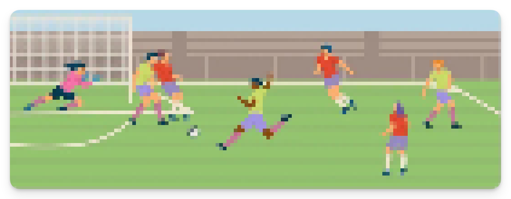
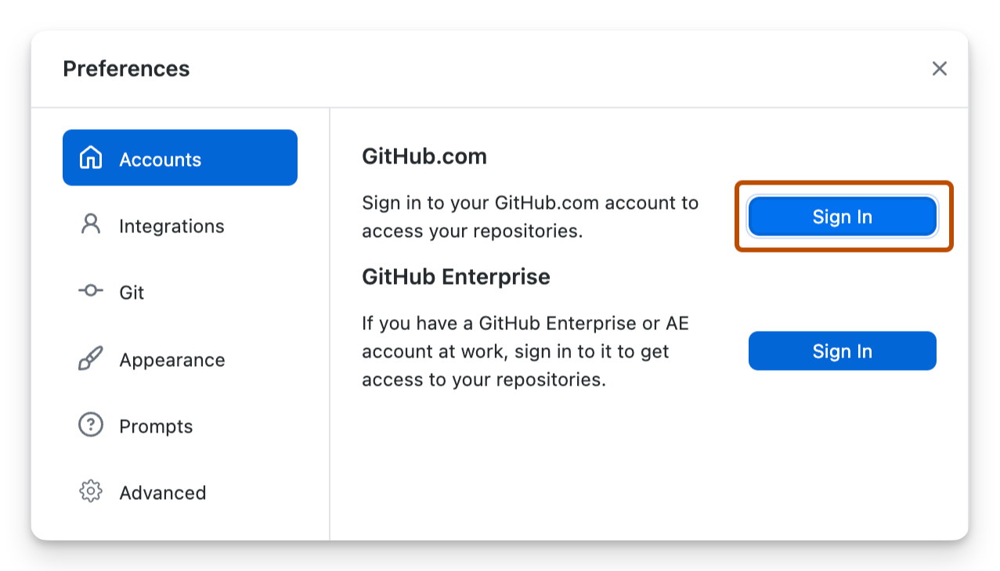

![]()
1-data/
├── raw/
│ └── fixtures.csv
└── clean/
2-scripts/
├── 01-clean.R
├── 02-analysis.R
└── 03-plot.R
outputs/Reproducible workflows in R
Practical
Welcome
This practical will bring together the steps covered in the lecture by:
- Building a reproducible R pipeline
- Committing your project to GitHub
- Restoring it from GitHub
With the Women’s EURO 2025 final approaching this weekend, we’ll build a reproducible pipeline to predict England’s chance of winning the final against Spain, using information on their performance over the past year.
You will:
- Build models to predict England’s chance of winning their next match.
- Simulate the likely outcome of the final.
- Use
herefor file paths andrenvto lock package versions. - Create a Git repository, version your code with git, and push it to GitHub.
- Make the project fully reproducible and shareable.

Setup
Software
To complete this practical, you’ll need:
- R (≥ 4.3)
- RStudio
- Git, used for version control; or
- GitHub Desktop, a user-friendly way to interact with Git and GitHub.
GitHub Desktop includes Git, so you don’t need to install Git separately if you use it. However, we recommend installing Git directly to ensure compatibility with RStudio’s Git features.
Installing Git
Git is often pre-installed on macOS. You can check by typing in the terminal:
git --versionIf it’s not installed, run:
xcode-select --installYou can optionally install GitHub Desktop, a graphical interface for Git and GitHub, by following the instructions here.
You can download Git for Windows from https://git-scm.com. Run the installer and accept default options, in particular:
“Use Git from the command line and also from 3rd-party software”
You can optionally install GitHub Desktop, a graphical interface for Git and GitHub, by following the instructions here.
Authenticating with GitHub
To push and pull from GitHub, you need to authenticate. There are two options:
- Recommended for longer-term use.
- Requires access to a command line.
Generate a key (if you don’t have one):
ssh-keygen -t ed25519 -C "your_email@example.com"Copy the key to your clipboard
pbcopy < ~/.ssh/id_ed25519.pubcat ~/.ssh/id_ed25519.pub | clip- Add it to GitHub:
- Go to GitHub → Settings → SSH and GPG keys.
- Click New SSH key and paste your generated key.
See these instructions if you get stuck.
- A good place to start if you’re new to Git.
- When you first log in via GitHub Desktop, it stores a token securely.
- You can clone, commit, push, and pull without dealing with passwords or keys.

1 Create a project in RStudio
Create a new RStudio Project and give it an appropriate name (e.g., euros-prediction):
File → New Project → New Directory
2 Download the scripts and datasets
Right click the links below to download the required scripts and dataset:
Put these inside your project folder and recreate the structure shown below:
3 Initialise renv and install the required packages
In the R console, type:
- 1
-
Install the
renvpackage. You only need to do this once—not for each project. - 2
-
Initialise
renvfor the current project. - 3
- Install packages required for this project.
- 4
-
Save the current state into
renv.lock.
Open the renv.lock lockfile to understand its contents.
4 Run the three scripts
Once packages are installed and renv is initialised, you’re ready to run the analysis.
Run 01-clean.R in RStudio. This script:
- Imports the
fixtures.csvdataset from the1-data/rawfolder. - Performs data cleaning, adding venue, Elo ratings, rest days, and form.
- Saves a cleaned dataset to
1-data/clean/fixtures.rds.
Run 02-analysis.R in RStudio. This script:
- Fits two Poisson regression models to predict:
- England’s goals
- Opponent’s goals
- Simulates 1000 match results
- Saves the probabilities to
outputs/results.rds
Run 03-plot.R in RStudio. This script:
- Loads the saved probabilities (
outputs/results.rds). - Creates a bar chart of predicted win/draw/loss.
- Saves the figure to
outputs/prediction_plot.png.
5 Putting it all together
Create a new script run.R at the project root with the contents:
run.R
library(here)
source(here("2-scripts", "01-clean.R"))
source(here("2-scripts", "02-analysis.R"))
source(here("2-scripts", "03-plot.R"))This script uses source to run the three scripts sequentially, avoiding the need to run them separately.
Run the run.R script either by clicking Run or by typing at the console:
source("run.R")6 Initialise the Git repository
We’ve now set up our project, initialised renv, and created a run.R script that automates our data cleaning and analysis.
In this section, we’ll initialise a new, empty Git repository. Git will allow us to track changes to our files over time and restore previous versions.
You can complete this section via the terminal or using a desktop application, such as GitHub Desktop.
Open a terminal in the project root and type:
git init- You can do this from within RStudio in the ‘Terminal’ pane.
- If you haven’t yet installed Git, see the instructions above.
- Open GitHub Desktop.
- Go to File → Add Local Repository….
- Click Choose… and select your existing project folder.
- You should see the prompt:
The directory does not appear to be a Git repository. Would you like to create a repository here instead?”
- Click “Create Repository”.
7 Commit files to the local repository
Having initialised the empty repository, we now need to add our files.
1git add 1-data/*
2git add 2-scripts/*
3git add run.R
4git add renv.lock
5git add euros-prediction.Rproj
6git commit -m "Initial commit"- 1
- Add all files in the ‘1-data’ folder.
- 2
- Add all files in the ‘2-scripts’ folder.
- 3
-
Add the
run.Rscript. - 4
-
Add the
renv.locklockfile. - 5
- Add your RStudio Project file; change the name as appropriate.
- 6
-
Commit the new files with a short message (specified by
-m)
Open GitHub Desktop and select your repository.
In the Changes tab, tick the checkboxes to stage the following:
- All files in the
1-data/folder - All files in the
2-scripts/folder - The
run.Rfile - The
renv.lockfile
- All files in the
At the bottom left, enter a commit message:
Initial commitClick Commit to main.
8 Create an empty repository on GitHub
If you haven’t already, create an account on GitHub.com.
Then, go to https://github.com/new and create a new, empty repository with an appropriate name (e.g.,
euros-prediction)
9 Connect our local repository to GitHub
We then need to connect your local repository with one you just created on GitHub.
In the terminal, you can do this by typing:
- 1
-
Set the
remoteto point to the new repository on Github. You will need to replace the URL with the corresponding URL for your repository. - 2
- ‘Push’ the local history to GitHub.
On GitHub.com, create a new (empty) repository.
In GitHub Desktop, go to Repository → Repository Settings…
Under Remote, click Add and enter:
- Name:
origin - URL:
git@github.com:username/repo.git(Replace with the URL of your new repository)
- Name:
Click Save.
Back in the main window, click Push origin (top bar) to upload your commits to GitHub.
10 Reproducing your analysis from GitHub
We’ll now test that we can recreate our analysis from the online repository. This ensures your project can be reliably re-run on another computer or by another user.
The steps involved are:
- ‘Clone’ the existing repository from GitHub.
- Restore the
renvenvironment. - Run the
run.Rscript to repeat the analysis.
In the terminal:
1git clone https://github.com/username/your-repo.git- 1
-
‘Clone’ the repository on GitHub to a local folder. Replace
usernameandyour-repoas appropriate.
Then open the RStudio Project, and at the R console:
renv::restore()
source("run.R")- File → Clone Repository…
- Choose your repository.
Then open the RStudio Project, and at the R console:
renv::restore()
source("run.R")11 Adding a ‘README’ file
- Write a
README.md1 file in your project folder. Briefly describe the analysis and steps needed to reproduce. - Add and commit this file to your local repository.
- Push the changes to GitHub.
Once pushed, you can view the README.md on your repository page on GitHub.